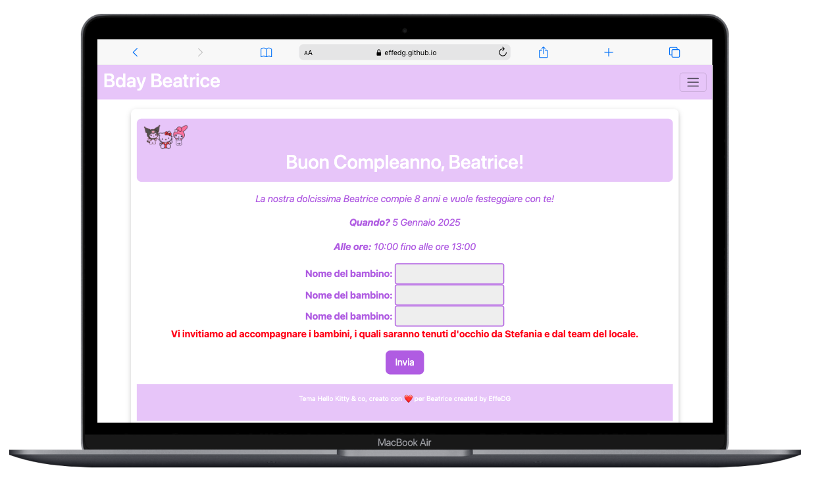

Chi sono
Ciao! Sono Federica Giovanni, una web developer specializzata in front-end, con una passione per il design e le interfacce intuitive.
Portfolio
Qui puoi trovare i miei progetti più recenti che evidenziano le mie competenze di sviluppo front-end.
Primo progetto finale front-end
Ho realizzato un sito web dedicato alla vendita di accessori e attrezzature per il tennis. Il design e la funzionalità del sito sono stati strutturati in modo intuitivo per offrire un'esperienza utente ottimale.

Invito interettivo!
Invito interettivo per l'evento "Bday Bea", in questo modo tutta l'organizzazione e la comunicazione si presenterà in maniera efficiente e piacevole per i pratecipanti.
Contatti
Sentiti libero di contattarmi sui miei social o tramite email per collaborazioni o domande.